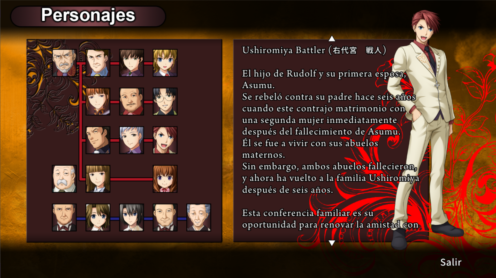

El Umineko Project es un port hecho por fans de la versión de PlayStation 3 (PS3) de Umineko no Naku Koro Ni para PC y otras plataformas. Este port ofrece una experiencia más atractiva con características mejoradas como mayor resolución, voces para los personajes, sprites mejorados, subtítulos para las canciones, sincronización de labios completa, y efectos de animación únicos de la versión de PS3. No se trata de un mod para un juego ya existente, sino de una adaptación completa e independiente que reúne los mejores aspectos visuales y técnicos de la versión de PS3 en una experiencia optimizada para PC.
Umineko Project Español es un proyecto de la comunidad que ofrece un parche en español para el port de la versión de PlayStation 3 de Umineko no Naku Koro ni. Este parche incluye una traducción nueva y mejorada al español, subtítulos para todas las canciones vocales de la novela, y gráficos totalmente en español.

¿Puedo usar este parche en la versión de Steam?
No, este es un parche para el port de PS3 “Umineko Project”, no es compatible ni con la versión de Steam ni tampoco con la versión original de PC.
¿El parche es solo una corrección de la traducción original de 07th Inquisition?
No. Si bien el proyecto inició con la idea de traspasar y corregir esa tradución para el Umineko Project, al revisar el texto notamos que en algunas partes no eran fieles al material original, por lo que abandonamos esa idea y comenzamos a trabajar en una nueva traducción desde cero. Esto no fue culpa de 07th Inquisition como tal, si no de la traducción en inglés original de WItch Hunt de la cual se basaron para su traducción. No obstante, seguimos dándoles crédito por las partes de su traducción que sí usamos en el arco de preguntas.
¿Desde aquí puedo descargar el juego completo?
No, nosotros solo proporcionamos el parche en español. Para aplicar el parche deberán tener instalado el Umineko Project, el cual pueden conseguir en su página web oficial.
¿El parche es fiel al material original de Umineko?
Sí. Como equipo, nuestro objetivo siempre ha sido ofrecer la mejor experiencia posible para aquellos que buscan leer Umineko en español, y nos aseguramos que cada parte mantenga la mayor fidelidad posible al guion de la versión de PS3.
¿Esta versión tiene los arcos extra de Umineko?
No, el Umineko Project es un port de la versión de PS3, y no incluye los arcos extras de Umineko Tsubasa o Hane, tampoco los de Saku, por tanto, nuestro parche tampoco los incluye.
INSTRUCCIONES
Uso de instalador (Solo PC)
1 - Tener instalado el Umineko Project. 2 - Descargar el instalador del parche. 3 - Ejecutar el instalador y seleccionar la ruta en la que tienes instalado el Umineko Project. 4 - Esperar a que el instalador descargue y aplique el parche. 5 - Configurar el Umineko Project al idioma español en configuraciones. 6 - Disfrutar del parche.
Instalación manual
1- Tener instalado el Umineko Project. 2- Descargar .zip con los archivos del parche. 3- Descomprimir el .zip en la carpeta principal del Umineko Project. 4- Configurar el Umineko Project al idioma español en configuraciones. 5- Disfrutar del parche.